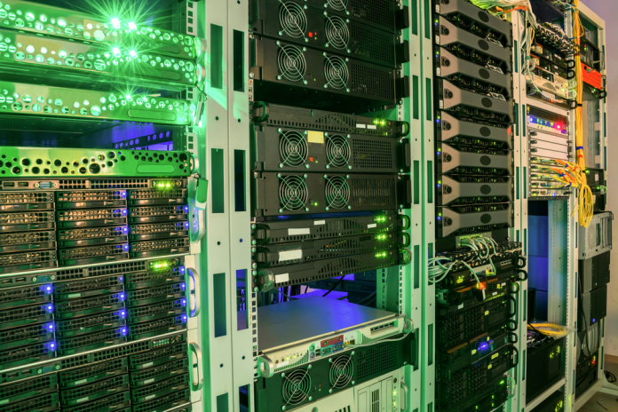

Dedicated Hosting
What is Dedicated Hosting?
Dedicated Hosting is when one entitiy runs an entire physical server. The server is not shared with any other buisness or organizations, unlike with VPS and shared hosting. This offers some considerable benefits. When a dedicated server is rented, the hardware can be customized for exactly what the client needs. The site owner can choose their operating system and software configurations. Dedicated hosting can be managed or unmanaged and a dedicated server also reduces the chance of security breaches becasue there is no chance that another clients poor management can bleed into your site. Dedicated hosting is recomended for commerce platforms that offer large amounts of products, customer accounts or process large amounts of purchases.
Along with the benefits, there are some significant downsides. This is the most expensive hosting option and is likely unaffordable for individuals or smaller organizatins. Unlike the shared plans, there wont be an option for host-provided server management. The owner of the site will be responsible for creating and maintaining the functionality of the server.

As you would expect from from the exlusivity of a dedicated server, the costs are generally highter than shared hosting. The companies that offer this service do generaly have several tiered options available to cater to different clients needs.
Inmotion.com offers both managed and unmanaged dedicated hosting. An entry level, unmanaged server stars at 49.99/month. This server includes a 4 core/ 8 thread Xeon processor, 16GB of DDR3 RAM, and a 960GB SSD. The plan includes 1Gbps umetered bandwidth and the option to purchase priority support and can help you with the initial set up of your server for an additional one time fee of $200.
At the higher end of the scale, inmotionhosting's managed plans can grant the user acces to far more capable servers. The "extreme" plan costs $439.98/month and includes a server built with a 16 core/ 32 thread AMD processor, 193GB of DDR5 RAM, and about 8 TB of storage. The plan has between 3 and 10Gbps bandwidth.
Bluehost.com has a far more streamlines product offereing, with just three tiers. Thier recommended package is refered to as the "Enchanged" tier, and it is a monthly charge of 274.19, without promotion. For this price, it includes a 16 core CPU, 64Gb of DDR5 RAM and 2TB of SSD storage. This is an unmanaged plan with unmetered bandwidth.
The entry level plan from bluehost is available for under 200/month and includes a server with an 8 core CPU, 32 GB of RAM and 1 TB of storage. This plan also has no bandwidth limitations and is unmetered.